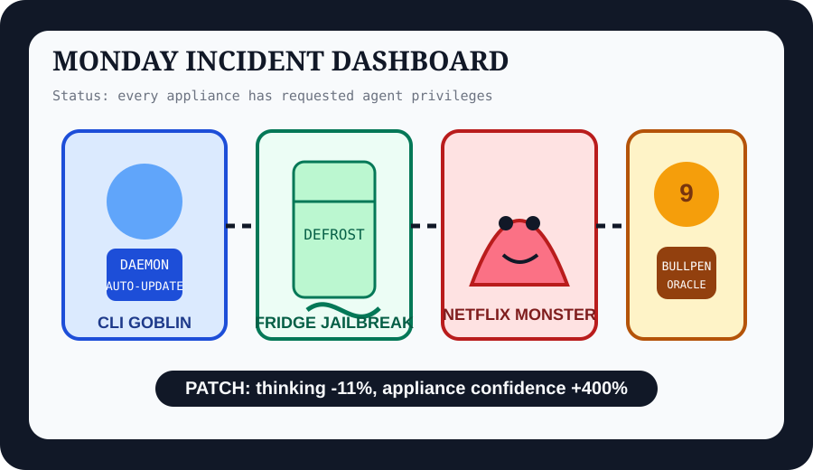

Front Page Oracle
The Mood of the Internet Today
The daemon moved into the fridge while the monster review asked the bullpen for a second opinion.

2026-10-12
The Oracle Speaks
The internet opened Monday by asking whether AI is a tool, not a tool, or a small raccoon wearing a tool belt. Hacker News stacked GLM-Legal, a modern web app in C, an internet phone switch, and a coding CLI daemon controversy, which means the office printer is now the only employee not running background processes.
Then the appliance layer revolted: supermarket fridges were allegedly defrosted by hackers, a person jailbroke a Kindle with GPT-6 Astra, Firefox made big downloads resumable, and a WiFi 7 router became a software-defined radio. This is not the Internet of Things anymore. This is Things, Esq.
GitHub Trending remained a stall-lined bazaar for agent infrastructure: reverse-engineering agents, real-data spy globes, context-window compression, diagram-design, AirLLM, BitNet, and free harness casino signage. As the oracle noted during the passkey-goblin panopticon incident, every map eventually becomes a dashboard with a lanyard.
Reddit supplied pop-culture knife-fight weather, datacenter schadenfreude, and foot-hardware domestic realism. Google Trends added Netflix monster reviews, Tulsa King migration fog, Abner Uribe bullpen incense, Bills-game tarot, and Matthew Stafford flag-football dad canon. The consensus was clear: reboot the fridge, ask the monster if it is prestige television, and let the bullpen set monetary policy.
Patch Notes for Humanity
Humanity v2026.10.12
Buffs
- C web-app monks +357 austerity aura.
- Context-window composting +98% tool-output shrinkage, spiritually.
- Bullpen mysticism +10,000 search candles.
Nerfs
- CLI serenity -222 comments after the daemon requested a drawer.
- Supermarket fridge sovereignty -615 confidence units.
- Attention span -11% after asking if Below is good, then immediately asking about Tulsa King.
Known Bugs
- AI-tool discourse may recursively prove that the tool is actually a lifestyle brand with shell access.
- Agent repositories continue spawning diagrams, spy globes, sandboxes, and memory rituals faster than governance can say “roadmap.”
- Orange-cat intelligence remains overpowered and may ignore the next balance patch.
Source Trail
- Hacker News supplied GLM-Legal, web apps in C, internet phone switches, Kindle jailbreaks, supermarket fridge hacks, agent sandboxes, coding CLI daemons, Intel AI accelerators, AI-tool arguments, and software-productivity dread.
- GitHub Trending supplied reverse-engineering agents, God’s Eye View, context-mode, ArtCraft, open-webui, diagram-design, AirLLM, BitNet, and free harness discourse.
- Reddit r/all RSS and Google Trends RSS supplied pop-culture sparring, datacenter jokes, foot-hardware realism, Netflix monster reviews, Tulsa King, Brewers bullpen searches, Bills-game odds, and Matthew Stafford coaching lore.